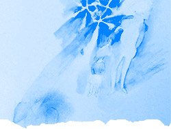

 image: E. Nagase“私たちの声だけが静かに揺れた”
７つ違うあのひとは
一緒にいると上手に息ができる、
そんな空気[1]をもってるひとだった。
話すたびに、会うたびに
離れられなくなってた。
食事にも、映画にも行かない
足しげく彼の家に会いにいく。
コールガール[2]。
でも
ここにいていいんだよ
そう言われてる気がして
何も求めなかった。
欲しくてたまらなくっても
何も求めなかった。
背伸びだけがうまくなっていった。
終電[3]に乗り遅れて
三軒茶屋から若林まで歩く。
モスバーガーを少しすぎて横道に入る。
あのひとのルート。
二人の世界。
私たちの唯一のデートコース。
去年の秋の夜。
仕事帰りの彼とバイト帰りの私。
月がきれいだった。
いつもの様に角をまがって
下る坂道がきらきらしてた。
私はあの人の話に笑って
あの人は私の話に笑って
私たちの声だけが静かに揺れた。
幸せだった。
幸せすぎた。
好き
言ってはいけないことば
ずっと我慢してたことば。
言ってしまったことば。
我慢できなくなったことば。
わかってた。
あの人がしなやかに
受け流すことくらい。
わかってた。
あの人がわたしの心を
求めてないことくらい。
わかってた。
わかってたつもりなのに
どっかで期待した。
涙をみせたくなくって
あの人の顔に傷つきたくなくって
ごめん
そういって逆方向に歩き出す。
最後だけは
上手にえがお、作れたよ、ね。
振り返らないよ。
あなたがとめないことくらい
わかってる。
眠りについた家たちは
静かすぎた。
きれいな道は
冷たすぎた。
背伸びした足じゃ
上手に走れなかった。
referenced works
- 空気：その場にいる人の気分に作用する雰囲気。広く、社会や時代などにおいて、人々の間に流れる、ある種の指向性のようなものを指す場合もある。良くも悪くも周囲に影響を与える人物は、濃密な空気をまとっており、そうではない人は希薄な空気しか持たない。そして、人は、空気の薄い場よりも濃密な場に、当たり前のように引き寄せられていくのかもしれない。息をするために。 ↩
- コールガール：もともとは、電話などの呼び出しに応じて客のもとへ出向く、売春婦のこと。呼ばれて、訪ねて、相手を満たす。相手の一方的な要求によって呼び出される関係性は、こうした職業を髣髴させる。そのときのコール音は、自分が求められ、必要とされていることの証ともなる。 ↩
- 終電：その日の最後の運行となる電車。金曜日の夜の下り方面の終電は、朝のラッシュのような込み具合に酒の匂いが加わり、乗客に苦行を強いる場となる。乗り遅れた者は、徒歩もしくはタクシー、徹夜か宿泊施設の利用かなど、体力と資本力との狭間で判断を強いられることとなる。 ↩
location information
- 場所: 世田谷区若林の住宅街
- 時間: 深夜
- 緯度: 35.653112
- 経度: 139.66713
- 地図: Google Maps
016 “ポツンと東京を見下ろすその姿は気高く、とても真摯だ。”
015 “光に彩られて先輩の横顔が、綺麗に染まる.。”
014 “悲しくて歩けないという気持ちを初めて知った夜”
013 “私たちの声だけが静かに揺れた”
012 “細くぐるりと指を囲む、日焼けをしていない左手の薬指の根元”
011 “涙を流しながら煙を吐く彼の隣”
010 “幼い耳には雑音にしか聴こえない音楽に興味が湧いた”
009 “今年も蕎麦が食べられるなぁ”
008 “お堀に映った月をみんなで見てる”
007 “バッグの中だけがつめたいまま”
006 “ほぼ満員の客がざわざわと寿司を食らっている”
005 “向かい合って、仁王立ち”
004 “なんでもないたった6畳の白い部屋”
003 “昔の彼女がスーツを着てモデルをしてた”
002 “電車が悪いんです”
001 “どこで彼女とセックスをするのかは、東京の子供にとっては問題です”

Write for Us!
広い東京の中に、あなたの思い出を刻んでみませんか？ あの日、あの場所で体験した、あの出来事。あなたにとって忘れられない思い出を、短い物語にして送ってください。
commentary